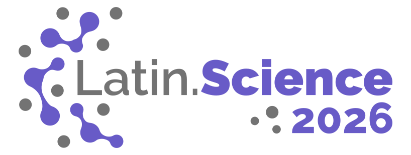

Rastreabilidade
Estado reconstruível a partir de um log imutável; replay como operação de primeira classe.
evidência · Event Sourcing
23º Congresso Latino-americano de Software Livre e Tecnologias Abertas


Uma arquitetura event-driven Open Source com Event Sourcing e CQRS para simulações Live–Virtual–Constructive em Smart Cities.
Universidade Presbiteriana Mackenzie · São Paulo, Brasil
Resumo
A complexidade inerente à gestão urbana no contexto de Smart Cities demanda soluções avançadas de planejamento e apoio à decisão, visando ampliar a consciência situacional e a resiliência dos ecossistemas urbanos. Este trabalho propõe e valida uma arquitetura de software orientada a eventos para uma plataforma que integra os domínios Live, Virtual e Constructive (LVC) sobre o Campus Living Lab da Universidade Presbiteriana Mackenzie. Fundamentada nos padrões Event Sourcing (ES) e Command Query Responsibility Segregation (CQRS), a arquitetura é construída exclusivamente com tecnologias Open Source, superando as barreiras de licenciamento e adoção dos padrões tradicionais High Level Architecture (HLA) e Distributed Interactive Simulation (DIS). O contrato canônico de interoperabilidade é definido via Protocol Buffers e gRPC, com geração automatizada de stubs Java, Python e Rust pelo módulo proto-shared. A plataforma foi materializada em seis módulos independentes e exercitada por adaptadores Live para AIS, SPTrans (OlhoVivo) e CGESP, um componente Virtual com interface Vaadin sobre o campus Higienópolis e um componente Constructive baseado em AirSim, com planejamento de trajetória apoiado por NVIDIA NIM e Ollama Gemma. Quatro cenários LVC integrados (cadastro de áreas e POIs, check-in/check-out de entidades, missão de drone disparada por eventos Live e auditoria de alertas) foram demonstrados sobre dois dashboards de observabilidade no Grafana. Os resultados validam a viabilidade técnica da arquitetura em quatro dimensões: rastreabilidade, reprodutibilidade, interoperabilidade multi-linguagem e integração com fontes reais. Como limitações, a validação estatística comparativa entre dados Live e modelos Virtual/Constructive e a avaliação de escalabilidade horizontal sob carga massiva permanecem como trabalhos futuros.
Tradução livre · o paper foi publicado em inglês.
Arquitetura
live-ms-javaAIS · OlhoVivo · CGESPvirtual-ms-javaVaadin · Gêmeo Digitalconstructive-ms-pythonAirSim · NIM / GemmaAdaptadores Live, Virtual e Constructive publicam eventos via gRPC, em três linguagens, num contrato único.
event-hub-ms-rust
Pub/Sub · Outbox · poller 500 ms
O hub roteia num Pub/Sub uniforme; o Outbox garante at-least-once, persistindo e despachando sob uma única transação.
eventhub_readWrite stores e read projections separam escrita de leitura; subscribers síncronos fecham ciclos de missão e o Grafana consulta as projeções.
Validação
Estado reconstruível a partir de um log imutável; replay como operação de primeira classe.
evidência · Event SourcingO ambiente completo sobe com docker compose up em qualquer máquina compatível.
evidência · infra-local-sharedUm único .proto gera stubs Java, Python e Rust: três linguagens, um só contrato.
evidência · proto-sharedTrês adaptadores Live em modalidades distintas: REST autenticada, web scraping e API com cadastro.
evidência · AIS · OlhoVivo · CGESPDemos
Materiais
Citação
@inproceedings{pereira2026lvc, title = {Open Source {LVC} Simulation Architecture}, author = {Pereira, Rafael Rodrigues and Santos, Luiza Ribeiro dos and Vogel, Marcos Henrique Mansano and Rodrigues, Bruno da Silva and Lopes, Fabio Silva and Takase, Fabio Kawaoka}, booktitle = {Latin.Science 2026 -- 23rd Latin American Congress on Free Software and Open Technologies (Latinoware 2026)}, year = {2026} }
Aponte a câmera para o código ou copie o link.
tcc-modern-lvc-arch.github.io/latinoware2026/